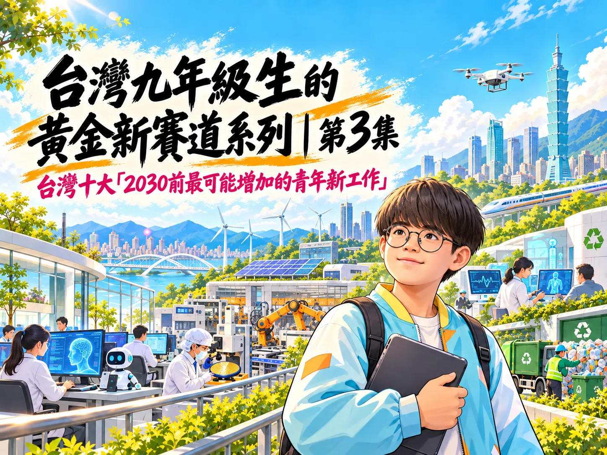
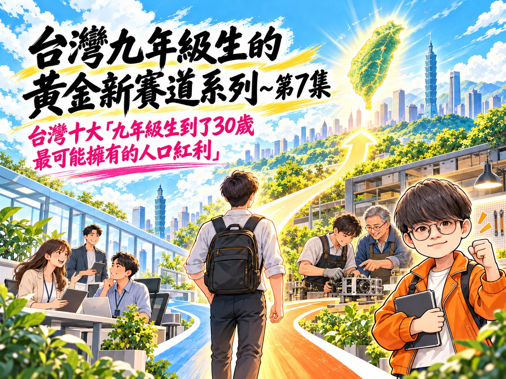
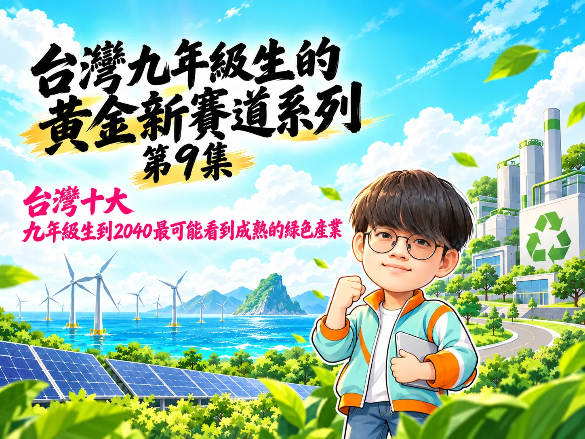
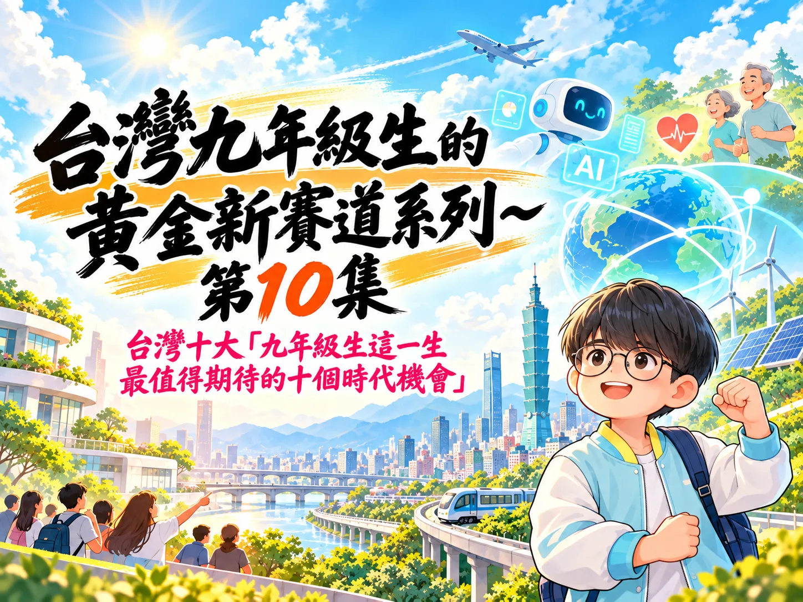

一條從科技工具走向人生選擇的探索路線
本系列以 2001–2010 年出生者為觀察範圍。2026 年約 15–25 歲，實際年齡依生日而異。各集使用的人口、勞動、教育、健康與產業資料母體不同；整體統計不等於九年級生專屬數據，趨勢也不構成個人結果保證。
九年級生的黃金新賽道｜10 集系列摘要介紹
以 2001–2010 年出生世代為觀察範圍，將 10 集串成一段從工具與學習、工作與創業，走向全球移動、人口、健康與綠色轉型的探索旅程。各集引用的統計母體不同，並非九年級生專屬數據。
本集提問：如果 AI、人口與環境都在變，九年級生這一生會遇到哪些新選擇？
- 01第1集｜AI 工作方式：工具如何進入日常工作
- 02第2集｜自主學習入口：知識如何更容易取得
- 03第3集｜青年新工作：技能需求如何移動
- 04第4集｜職涯規則：工作路徑如何變得多元
- 05第5集｜創業入口：小型想法如何開始測試
- 06第6集｜跨國人生：學習、工作與生活如何跨境
- 07第7集｜人口機會：青年稀缺可能帶來什麼條件
- 08第8集｜健康與長壽：管理如何從青年開始累積
- 09第9集｜綠色產業：淨零如何連到職涯中段
- 10第10集｜時代機會：把趨勢接回一生的選擇
本集收束：這 10 集描繪趨勢與可探索的方向；選擇仍要回到每個人的能力、資源、責任與生活條件。
台灣十大「九年級生到2030最可能習以為常的AI工作方式」
從跨語言溝通、文字與資料整理，到流程自動化和人機協作，觀察 AI 如何進入工作流程；曝險或推估都不等於工作必然消失。
本集提問：2030 年前，AI 會以什麼方式進入每天的工作？
- 第十名AI 協助跨語言溝通與內容轉換
- 第九名AI 協助撰寫與修改日常工作文字
- 第八名AI 成為企業知識與文件的搜尋入口
- 第七名AI 協助整理資料、抓出趨勢與製作報表
- 第六名AI 處理服務流程的第一線詢問與分流
- 第五名AI 將例行行政步驟串成自動化流程
- 第四名AI 代理接手有範圍、有檢查點的任務
- 第三名人與 AI 以分工方式共同完成一項工作
- 第二名工作者用自然語言指揮工具、資料與任務
- 第一名先思考工作目標，再安排人與 AI 的協作流程
本集收束：AI 可以接手部分步驟，目標設定、查核與負責仍需要人。
台灣十大「九年級生比上一代多出的自主學習入口」
數位圖書館、開放課程、影音、社群、搜尋與 AI 助理擴大知識入口；入口增加不等於學會，仍需要練習、查證和可近的設備與網路。
本集提問：遇到不懂的事，今天可以從多少個入口開始學？
- 第十名數位圖書館與電子書
- 第九名MOOC 與大學開放課程
- 第八名政府開放資料與公共資料集
- 第七名線上社群、問答平台與同儕共學
- 第六名線上教學影片與影音示範
- 第五名搜尋引擎與跨網站資訊檢索
- 第四名互動練習、題庫與適性學習平台
- 第三名手機與行動網路帶來的隨身學習
- 第二名整合式教育入口與單一登入資源網
- 第一名生成式 AI 學習助理與對話式學習
本集收束：入口可以打開知識，真正帶得走的能力仍要靠持續練習。
台灣十大「2030前最可能增加的青年新工作」

從循環經濟、能源診斷、數位健康、雲端資安，到智慧製造、晶片與 AI 應用，辨認可能增加的職務方向，同時區分實際職缺和預測。
本集提問：當產業和技能需求改變，青年可能走進哪些新職務？
- 第十名資源循環與再生料品質技術人員
- 第九名節能診斷與能源績效驗證工程師
- 第八名智慧建築與電力設備維運技術人員
- 第七名醫療數位化與健康服務專案人才
- 第六名照護、復能與健康支持專業人員
- 第五名雲端、網路與資安維運專業人員
- 第四名工程測試、驗證與技術顧問
- 第三名智慧製造、機器人與自動化整合工程師
- 第二名積體電路設計、韌體與晶片系統工程師
- 第一名人工智慧應用工程師與產業整合人才
本集收束：看懂趨勢能增加準備方向，但職缺和錄取仍取決於條件。
台灣十大「九年級生最可能告別的傳統職涯規則」
檢視單一職稱、固定升遷階梯和技能用一輩子的職涯想像；規則變得多元，不代表穩定任職失去價值。
本集提問：如果不必在同一家公司待到退休，什麼才算職涯穩定？
- 第十名第一份工作決定一生職涯方向
- 第九名換過工作就代表不夠穩定
- 第八名一家公司裡只有一條標準升遷階梯
- 第七名待得夠久就自然升遷、加薪
- 第六名學會一套技能，就能做完整個職涯
- 第五名只有公司安排的課程才算職場學習
- 第四名只有全職、長期、單一雇主才算真正工作
- 第三名工作必須在固定地點、固定時間完成
- 第二名一個人只能有一份工作、一種收入來源
- 第一名職涯穩定只能由雇主和職稱保證
本集收束：職涯不只有一種規則，穩定也可以由能力與支持共同建立。
台灣十大「九年級生比上一代更低門檻的創業入口」
從一站式開辦、雲端、無程式碼工具、電商、金流、物流到 AI，觀察小型創業如何先測試想法；入口較低不表示營運沒有成本與責任。
本集提問：今天開始一門小生意，入口真的比上一代更容易了嗎？
- 第十名一站式企業開辦與商工資料查詢
- 第九名雲端運算與線上儲存
- 第八名無程式碼網站、表單與自動化工具
- 第七名社群內容與官方訊息帳號
- 第六名電商與交易市集
- 第五名訂閱式電商開店服務
- 第四名數位金流服務
- 第三名整合式物流與履約服務
- 第二名生成式 AI 與自動化工具
- 第一名組合雲端、AI、平台與服務的一人公司營運系統
本集收束：工具讓試錯更容易開始，能否持續經營仍需面對成本與責任。
台灣十大「九年級生最可能擁有的跨國人生選項」
從短期交流、留學和海外見習，到跨國受僱、遠距合作、移居與返台銜接，呈現不同人生階段可能並存的跨境選項。
本集提問：如果工作不再只綁在一個城市，青年會有哪些選擇？
- 第十名長期移居或申請海外居留
- 第九名直接應徵海外雇主
- 第八名跨國企業內部轉調或海外派駐
- 第七名跨國遠距受僱
- 第六名跨境自由接案與專案合作
- 第五名度假打工與青年交流簽證
- 第四名海外學習或工作後返台銜接
- 第三名海外實習、研修與青年見習
- 第二名海外學位留學
- 第一名大學交換、雙聯學位與短期教育交流
本集收束：跨國選項增加，仍要依資格、資源、家庭與生活條件做選擇。
台灣十大「九年級生到了30歲最可能擁有的人口紅利」

探討青年人口變化如何在特定技能、招聘和接班情境增加部分人的選擇；人口稀缺不保證人人加薪、升遷或更容易就業。
本集提問：青年人數變少，30 歲就更容易談薪或升遷嗎？
- 第十名求職者更需要看懂產業差異，而不是只看「缺人」兩個字
- 第九名跨產業轉職的入口可能增加
- 第八名技能訓練可能成為青年與企業共同投資的籌碼
- 第七名年輕員工可能更早承接跨職能專案責任
- 第六名職務內容可能比職稱更快擴大
- 第五名人才稀缺可能讓雇主更重視留才條件
- 第四名掌握專業技能的人可能有更清楚的薪資協商空間
- 第三名資深同事的知識與工作任務需要傳承
- 第二名企業接班與中階管理的入口可能提早打開
- 第一名讓可證明的能力更有機會轉成選擇權
本集收束：人口變化帶來可能性，能力、制度與職場條件決定能否接住。
台灣十大「九年級生可能成為最早從青年就管理長壽的一代」
從健康紀錄、數位資訊與預防服務，思考健康管理能否提早而連續；科技不取代醫療專業，也不保證延壽。
本集提問：健康管理從 20 歲開始，可能改變什麼？
- 第十名穿戴與手機健康紀錄
- 第九名官方健康資訊的數位入口
- 第八名線上查詢預防接種紀錄
- 第七名健康存摺中的個人就醫資料
- 第六名健檢後的風險評估與衛教諮詢
- 第五名符合條件時使用通訊診療
- 第四名從 30 歲開始使用成人預防保健
- 第三名把健檢數字接到生活建議
- 第二名預防服務的數位提醒與健康幣
- 第一名讓健康紀錄與預防照護逐年接起來
本集收束：長壽管理要靠可信資料、可近服務、專業支持和能持續的生活條件。
台灣十大「九年級生到2040最可能看到成熟的綠色產業」

把淨零政策時程連到 2040 職涯中段，觀察綠色產業的政策、投資、產值與人才訊號，以及成熟仍面臨的技術與社會條件。
本集提問：到 2040 年，哪些綠色技術可能成為穩定產業？
- 第十名氫能與低碳燃料
- 第九名碳捕捉、利用與封存
- 第八名永續農業、森林與自然解方
- 第七名綠色金融與碳管理服務
- 第六名低碳建築與既有建物改造
- 第五名電動運具、充電服務與電池循環
- 第四名循環經濟與再生材料
- 第三名工業節能與低碳製程
- 第二名電網升級、智慧調度與儲能
- 第一名再生能源及其供應鏈
本集收束：產業機會要由政策落實、投資、技術與人才共同形成。
台灣十大「九年級生這一生最值得期待的十個時代機會」

總結 AI、長壽、綠色轉型、全球連結與人口變化，回到一個核心：值得期待的是選項增加，並能按自身條件累積能力、參與和選擇。
本集提問：九年級生這一生，會遇見哪些時代變化與新選擇？
- 第十名跨境學習與工作協作
- 第九名數位公共服務與開放資料
- 第八名輔助科技與友善服務
- 第七名持續學習與技能轉換
- 第六名小規模數位創作與創業
- 第五名綠色轉型與氣候調適
- 第四名從成年早期開始的預防健康管理
- 第三名長照與跨世代服務創新
- 第二名人工智慧協作擴大個人與小團隊能力
- 第一名長壽人生中的多階段選擇
本集收束：趨勢不替任何人寫好答案；值得期待的是選項增加，且人生仍可由自己選擇。